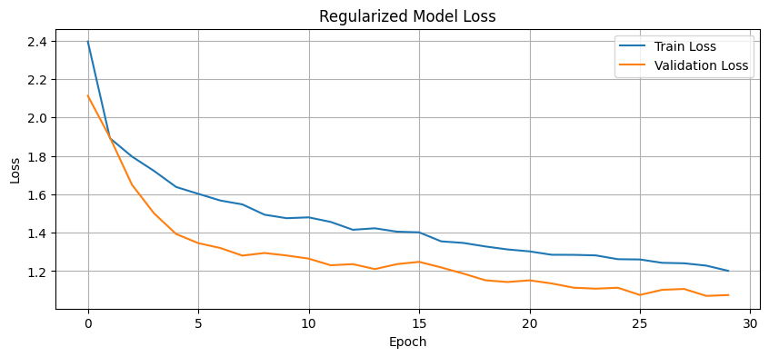

CH 01 과적합이란 무엇이고 어떻게 알아보나#
과적합(overfitting)은 모델이 훈련 데이터에 지나치게 맞춰져, 정작 본 적 없는 데이터에서 성능이 떨어지는 현상이다. 모델이 패턴이 아니라 훈련 샘플 하나하나(노이즈까지)를 외워 버린 상태라고 보면 된다. 그래서 과적합을 막는 일은 곧 모델의 일반화(generalization) 성능을 높이는 일이다.
판단 기준은 한 가지로 모인다. 학습이 진행될수록 훈련 손실(train loss)은 계속 내려가는데 검증 손실(validation loss)은 어느 순간부터 다시 올라간다. 두 곡선이 벌어지기 시작하는 그 지점이 과적합이 시작되는 신호다. 정확도로 보면 train accuracy는 0.97까지 치솟는데 val accuracy는 0.81에서 더 안 오르거나 흔들린다 — 이 간격이 과적합의 크기다.
그렇다면 정규화를 모두 빼고 용량이 큰 모델을 작은 데이터에 돌리면, train 손실은 거의 0에 가깝게 떨어지고 val 손실은 도리어 올라가는 "train↓·val↑" 그림이 그대로 나올 것이다. 반대로 방어 기법을 걸면 그 간격이 좁아질 것이다 — 두 모델을 같은 데이터로 나란히 학습시켜 확인한다.
CH 02 정규화 없는 큰 모델 — train↓ val↑#
비교를 위해 데이터를 Fashion-MNIST의 부분집합으로 줄였다. 데이터가 적을수록 과적합이 잘 드러나기 때문이다. 기준 모델은 입력 784 → 1024로 넓히는 큰 MLP에 아무 정규화도 걸지 않았다 — Dropout도, BatchNorm도, weight decay도 없는 Adam(lr=0.001)이다. 데이터 양에 비해 모델이 너무 똑똑한 전형적인 과적합 조건이다.
30 에폭 학습 로그를 보면 가설 그대로다. train 정확도는 0.98까지 올라가고 train 손실은 0.06 수준까지 떨어지는데, val 손실은 0.85 → 1.05 → 1.15로 다시 올라간다. 외우기는 하는데 새 데이터엔 약하다는 뜻이다.
Epoch 24 | Train Loss: 0.1285 | Train Acc: 0.9563 | Val Loss: 0.8523 | Val Acc: 0.8117 Epoch 25 | Train Loss: 0.0731 | Train Acc: 0.9779 | Val Loss: 0.9943 | Val Acc: 0.7950 Epoch 26 | Train Loss: 0.0712 | Train Acc: 0.9783 | Val Loss: 1.0144 | Val Acc: 0.7850 Epoch 27 | Train Loss: 0.0607 | Train Acc: 0.9808 | Val Loss: 1.1387 | Val Acc: 0.8100 Epoch 28 | Train Loss: 0.0630 | Train Acc: 0.9792 | Val Loss: 1.1523 | Val Acc: 0.7967 Epoch 29 | Train Loss: 0.1017 | Train Acc: 0.9621 | Val Loss: 1.0131 | Val Acc: 0.8117 Epoch 30 | Train Loss: 0.0609 | Train Acc: 0.9817 | Val Loss: 1.0788 | Val Acc: 0.8050

train 손실 0.06, train 정확도 0.98이라는 숫자만 보면 "잘 학습됐다"고 착각하기 쉽다. 그러나 val 손실이 후반으로 갈수록 1.0 위로 올라가며 두 곡선이 벌어진다 — 이게 과적합의 시각적 정의다. 한 곡선(train)만 보면 절대 못 잡고, train과 val을 같은 그래프에 겹쳐 그 간격을 봐야 한다.
CH 03 방어 기법 한 묶음 — 무엇이 무엇을 막나#
개선 모델은 용량을 줄이고(작은 모델), 여러 방어를 동시에 걸었다. 각 기법은 막는 지점이 다르다.
데이터 증강은 기존 이미지를 약간 회전·이동시켜(RandomRotation, RandomAffine) 매번 조금씩 다른 입력을 보여 준다. 같은 그림을 외우지 못하게 데이터 다양성을 늘리는, 데이터 측면의 방어다. Dropout은 학습 중 뉴런 일부를 무작위로 꺼서(여기선 0.5, 0.3 비율) 특정 뉴런에만 의존하는 걸 막는다. 매번 다른 부분망이 학습되는 일종의 앙상블 효과인데, 단 끄는 건 학습 때뿐이고 평가 때는 모든 뉴런을 쓰되 가중치를 보정한다. BatchNorm은 각 층 활성화 분포를 평균 0·분산 1로 정규화한다. 원래 목적은 학습 안정화·속도지만, 미니배치마다 통계가 흔들리며 약한 노이즈가 섞여 부수적 규제 효과도 낸다. 마지막으로 AdamW의 weight decay(L2 계열)와 label smoothing으로 가중치 크기와 과신을 함께 눌렀다.
같은 데이터를 이 개선 모델로 돌린 로그를 보면, 그림이 완전히 다르다. train 손실이 1.08 수준에서 멈추고 train 정확도가 0.73 근처에 머문다 — 더 이상 외우지 못한다. 그리고 train과 val이 거의 붙어 간다.
Epoch 24 | Train Loss: 1.1012 | Train Acc: 0.7346 | Val Loss: 1.0523 | Val Acc: 0.7450 Epoch 25 | Train Loss: 1.0868 | Train Acc: 0.7317 | Val Loss: 1.0435 | Val Acc: 0.7483 Epoch 26 | Train Loss: 1.1003 | Train Acc: 0.7296 | Val Loss: 1.0440 | Val Acc: 0.7533 Epoch 27 | Train Loss: 1.0886 | Train Acc: 0.7375 | Val Loss: 1.0559 | Val Acc: 0.7417 Epoch 28 | Train Loss: 1.0857 | Train Acc: 0.7321 | Val Loss: 1.0523 | Val Acc: 0.7400 Epoch 29 | Train Loss: 1.0821 | Train Acc: 0.7450 | Val Loss: 1.0401 | Val Acc: 0.7683 Epoch 30 | Train Loss: 1.0828 | Train Acc: 0.7358 | Val Loss: 1.0252 | Val Acc: 0.7550

train 정확도 0.98 → 0.73으로 떨어진 걸 보고 "모델이 망가졌다"고 읽으면 안 된다. 외우는 능력을 일부러 꺾어 train↔val 간격을 거의 0으로 만든 것이 목적이다. 다만 방어를 동시에 너무 강하게 걸면 반대로 underfitting — train조차 못 맞추는 — 으로 넘어갈 수 있어, 규제 강도는 train·val을 함께 보며 조절해야 한다.
CH 04 L1과 L2 — 0으로 미느냐 작게 줄이느냐#
가중치 규제는 손실 함수에 가중치 크기를 패널티로 더하는 방식이다(Loss_total = Loss + λ · R). 가중치가 너무 커지면 특정 특성에 과도하게 민감해지므로, 그 크기에 벌점을 매겨 누른다. 여기서 오래 헷갈리던 질문 하나 — "L1 규제는 불필요한 가중치를 0으로 미는 것 맞나?"
맞다. 둘은 패널티의 형태가 다르고, 그래서 결과도 다르다. L1(Lasso)은 가중치 절대값의 합(Σ|w|)을 패널티로 더한다. 이 형태는 중요하지 않은 가중치를 정확히 0으로 밀어 버려, 연결이 듬성듬성한 희소(sparse) 모델을 만든다. 사실상 "이 특성은 빼라"고 골라내는 변수 선택(feature selection) 역할을 한다. 반면 L2(Ridge / weight decay)는 가중치 제곱합(Σw²)을 더한다. 가중치를 0으로 만들지는 않고 전반적으로 크기만 작게 줄인다. 딥러닝에서는 보통 L2를 더 널리 쓰는데, 오늘 개선 모델의 AdamW weight decay와 TF의 regularizers.l2(0.001)가 바로 이 L2 계열이다.
한 문장으로 정리하면 — L1은 0으로 만들어 솎아내고(희소화·feature selection), L2는 작게 줄여 고르게 누른다. 실습에서 쓴 weight decay는 L2다. λ가 0이면 규제 없음, λ가 커질수록 가중치가 더 강하게 눌려 모델이 단순해지고, 지나치면 underfitting으로 넘어간다.
CH 05 규제의 역설 — 점수가 깎였는데 왜 성공인가#
두 모델을 같은 테스트셋으로 최종 평가했다. PyTorch와 TensorFlow 양쪽 모두에서, 강한 규제를 건 개선 모델의 절대 정확도가 기준 모델보다 낮게 나왔다.
# PyTorch 정규화 없는 모델 - Test Loss: 0.9453, Test Acc: 0.8167 정규화 적용 모델 - Test Loss: 0.9790, Test Acc: 0.7758 # TensorFlow / Keras 정규화 없는 모델 - Test Loss: 0.8616, Test Acc: 0.8036 정규화 적용 모델 - Test Loss: 1.0298, Test Acc: 0.7230
숫자만 보면 "규제가 성능을 깎았다"이다. 하지만 조건을 떠올려야 한다. 데이터를 일부러 작게 줄였고, 에폭도 짧으며, 방어를 한꺼번에 강하게 걸었다. 이런 상황에서는 증강·Dropout·강한 weight decay가 모델이 외우는 능력을 빠르게 꺾는다. 짧은 학습 안에서는 그 손해가 일반화 이득보다 먼저 드러나, 절대 정확도가 일시적으로 내려간다.
그래서 이 실습의 평가 지표는 테스트 정확도라는 한 숫자가 아니다. 핵심은 CH02·CH03에서 본 train↔val 손실 간격의 축소다. 기준 모델은 train 0.98 / val 0.81로 크게 벌어졌고, 개선 모델은 train 0.73 / val 0.75로 거의 붙었다. 데이터가 충분하고 에폭이 길어지면 이 좁은 간격이 더 안정적인 일반화로 이어진다. 점수 한 줄로 규제의 성패를 판정하면 정확히 거꾸로 읽게 된다.
📚 근거 출처
- 실습 코드 —
from_colab_deep_learning/0617-s(deep_learning_overfitting_prevention) - 실행 리포트 — overfitting_prevention_latest_report
- 강의 PDF — 딥러닝_오버피팅방지기법